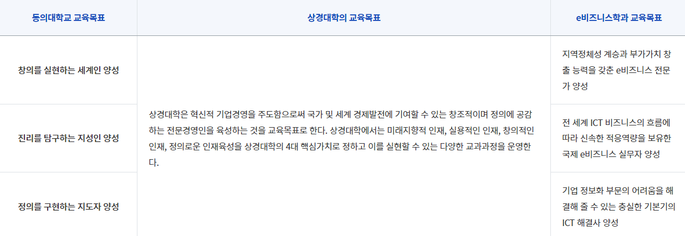

E비즈니스학과를 소개합니다.
IT기술과 경영학의 만남, e-business 전문가 양성
E비즈니스학과는 학과는 2000년 학과 설립 이래 열정과 역량을 겸비하신 교수진을 갖추고 디지털 경영시대에 적합한 교육과정과 지역 밀착형 인재 양성을 위해 노력해 왔습니다. 저희 전공은 디지털 경영에 꼭 필요한 교과목들과 응용프로그램들을 구비하고 있으며 학생진로지도와 산학연계 교과목, 공학사(컴퓨터공학)와 경영학사의 졸업장을 한꺼번에 받을 수 있는 융합연계 교과과정을 운영하는 등 학생들의 취업과 진로를 위한 선택을 폭을 넓히기 위하여 노력해 왔습니다. 저희 교수진은 21세기가 필요로 하는 제2, 제3의 스티브 잡스를 꿈꾸는 여러분들의 멋진 도전을 환영하며 부산과 대한민국이 자랑스러워할 지역인재를 키워내기 위해 더욱 열심히 노력할 것을 약속드립니다.
학과소개 상세 페이지
IT기술과 경영학의 만남, e-business 전문가 양성
E비즈니스학과는 학과는 2000년 학과 설립 이래 열정과 역량을 겸비하신 교수진을 갖추고 디지털 경영시대에 적합한 교육과정과 지역 밀착형 인재 양성을 위해 노력해 왔습니다. 저희 전공은 디지털 경영에 꼭 필요한 교과목들과 응용프로그램들을 구비하고 있으며 학생진로지도와 산학연계 교과목, 공학사(컴퓨터공학)와 경영학사의 졸업장을 한꺼번에 받을 수 있는 융합연계 교과과정을 운영하는 등 학생들의 취업과 진로를 위한 선택을 폭을 넓히기 위하여 노력해 왔습니다. 저희 교수진은 21세기가 필요로 하는 제2, 제3의 스티브 잡스를 꿈꾸는 여러분들의 멋진 도전을 환영하며 부산과 대한민국이 자랑스러워할 지역인재를 키워내기 위해 더욱 열심히 노력할 것을 약속드립니다.
학과소개 상세 페이지
E비즈니스 전공소개
E-business
e비즈니스학전공은
21세기 고도화된 정보화 시대의 주도적 학문 분야로, 미래사회에서 기업 및 개인의 활동방식을 변화시켜 국가와 기업의 생존을 위한 새로운 비즈니스의 프론티어로서 중추적인 역할을 수행하고, e비즈니스 기회를 창출할 수 있는 고도의 능력을 배양하여, 가상공간에서 비즈니스에 필요한 정보기술을 갖춘 전문인 양성을 교육목표로 합니다. 또한 미래의 경영자가 될 학생들에게 효율적으로 기업을 운영하고 의사결정자에게 적절한 정보를 적시에 제공하여 줄 수 있도록 정보기술과 정보시스템 관련 제반 지식을 중점 교육합니다.

21세기 고도화된 정보화 시대의 주도적 학문 분야로, 미래사회에서 기업 및 개인의 활동방식을 변화시켜 국가와 기업의 생존을 위한 새로운 비즈니스의 프론티어로서 중추적인 역할을 수행하고, e비즈니스 기회를 창출할 수 있는 고도의 능력을 배양하여, 가상공간에서 비즈니스에 필요한 정보기술을 갖춘 전문인 양성을 교육목표로 합니다. 또한 미래의 경영자가 될 학생들에게 효율적으로 기업을 운영하고 의사결정자에게 적절한 정보를 적시에 제공하여 줄 수 있도록 정보기술과 정보시스템 관련 제반 지식을 중점 교육합니다.